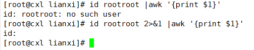

CUT
从文本文件或者文本流中提取文本列
cut -选项 提取范围 文本文件
常见选项
-c:从指定提取范围中提取字符（character）-f:从指定提取范围中提取字段（field）-d:指定分隔符(delimiter)，默认分隔符是tab键
提取范围
n:第n项n-:第n项到行尾-m:行首到第m项n,m:第n项和第m项n-m:第n项到第m项
注：tr -s " "压缩空格（去重）、tr -d "%":删除%
得出根分区的使用率的数字和得出/boot分区的使用率的数字
tr
- 字符装换工具
- 只能对stdin操作，不能直接对文件操作
使用tr装换字符
tr SET1 SET2
用SET2中的字符替换掉SET1中同一位置的字符
1 | [root@cxl lianxi]# echo 123456|tr 456 abc |
删除功能（-d）
压缩功能
管道“|”
连接左右两个命令，将左侧的命令的标准输出(正确的输出)，作为右侧命令的标准输入，前面，命令的错误输出不会送到管道符号给后面命令作为输入，除非2>&1。
2>&1:错误的跟着正确的也传过去

格式
cmd1 | cmd2 [...|cmdn]
用grep过滤输出
ls -l /etc/|grep pass管道和标准错误
find /etc -name "p*"|grep passwd查找出
/etc目录所有的.conf结尾的文件，然后将文件的路径重定向到/lianxi/all_conf.txt1
find /etc |grep ".conf$" >/lianxi/all_conf.txt
xargs
将前面命令的输出送给后面的命令作为参数使用
用途：
将参数列表转换成小块分段传递给其他命令
读入stdin的数据装换为参数添加到命令行中
让一些不支持管道的命令可以使用管道

basename
根据文件的路径截取文件名。
；
命令连接符号
先执行cmd1，然后在执行cmd2，再执行cmd3，不管前面的命令执行是否成功都会执行后面的命令
cmd1 ; cmd2 ; cmd3
<
导入符号
将后面文件的内容导入到前面命令
cat
cat能够合并两个文件的内容，能查看文件里的内容

标准输出
seq
用途
打印出一串有序的数字
1 | [root@cxl lianxi]# seq 10 |
格式
seq [选项] 数字范围
-s:指定分隔符(separator)
1 | [root@cxl lianxi]# seq -s " " 2 +2 10 |
-w:指定同等宽带输出(equal-width)
1 | [root@cxl lianxi]# seq -w 10 |
bc
linux下的计算器
1 | [root@cxl lianxi] |
1 | [root@cxl lianxi]# bash for.sh |
1 | [root@cxl lianxi]# bash for.sh |
tee
将内容重定向到一个文件，并且在屏幕上输出
1 | [root@cxl lianxi]# echo 123456|tee 123.txt |
$() 和``
$( )作用就是让命令在里面执行，得到这个命令执行的结果
$( )和``作用是一样
sort
默认按每行的第一个字符排序
-n:按整数进行排序
-r:递减排序
指定排序键
指定按哪一列数据进行排序
-k:指定哪一列为排序键
指定字段分割符
-t：指定字段分割符（默认是空白）